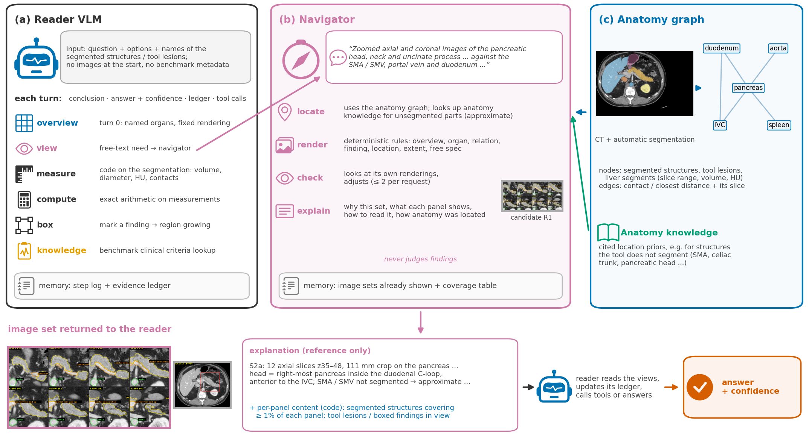
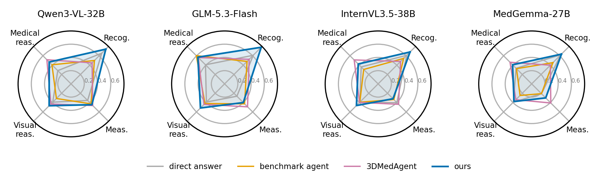
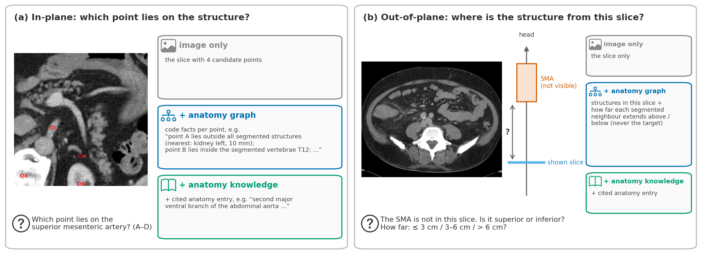
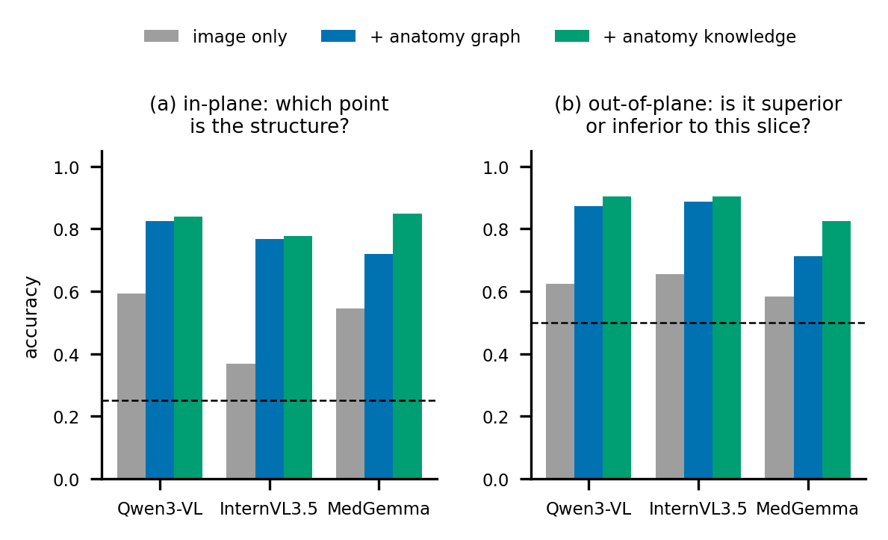

Figure 1. Task and idea. Given a 3D CT and a multiple-choice question (here: “Is there a pancreatic ductal adenocarcinoma? A: No, B: Yes”), fixed uniformly sampled slices rarely show what the question needs. Our agent asks for anatomy-specific views (“where is the pancreatic head? show it next to the duodenum”), which are located with an anatomy graph built from automatic segmentation and a cited anatomy knowledge base, and rendered as a question-specific mosaic of zoomed slices with a locator. The agent then answers (A: No, correct).
Vision-language models (VLMs) struggle with 3D CT: the volume has far more slices than fit into a prompt, and the relevant anatomy (a pancreatic head, a vessel next to a lesion) is often small and not marked. Clinicians solve this with anatomy: they know which structures to look at, where they are, and which views to put side by side. ClinicalEye gives a VLM the same two resources — an anatomy graph computed from automatic segmentation and a cited anatomy knowledge base — and splits the work between a reader that reasons about the question and a navigator that only locates anatomy and composes views.
Key message. It is not only about finding the right slice, but about returning the right mosaic of views: the right planes, slice range, zoom, window and neighbouring structures, arranged together and explained.
Benchmark protocol
No benchmark metadata reaches our agent: the reader starts with only the question, the answer options and the names of the segmented structures — no organ, lesion or question-type labels, and no images.
All compared methods run on the same 903 questions (lite903, stratified over the 42 subtypes) with the same base models.
One sample per condition; differences are tested with paired exact McNemar tests.
Method

Figure 2. Architecture. (a) Reader VLM: starts from the question, options and the names of the segmented structures / tool lesions; each turn it writes a conclusion, an answer with confidence, an evidence ledger and tool calls (overview, view, measure, compute, box, knowledge); its memory is a step log plus the evidence ledger. (b) Navigator: receives the reader's free-text request, locates the anatomy with the anatomy graph (and the anatomy knowledge base for unsegmented parts, marked approximate), renders candidate views with deterministic rules, checks its own renderings and adjusts (≤2 per request), then explains its choice; it never judges findings. Its memory holds the image sets already shown and a coverage table. (c) Anatomy graph from CT + automatic segmentation, plus the anatomy knowledge base. Bottom: the image set returned to the reader, with the explanation and code-computed per-panel content.
resource Anatomy graph
Built automatically from TotalSegmentator output.
Nodes: segmented structures, tool lesions and liver segments, each with slice range, volume and HU.
Edges: contact / closest distance between structures, plus the slice where it occurs.
resource Anatomy knowledge
Not every clinically relevant structure has a sufficiently good tool. A cited knowledge base gives location priors for such structures (e.g. SMA, celiac trunk, pancreatic head/tail, CBD): vertebral level, relations, appearance on axial CT, and how to locate them from segmented neighbours.
agent Reader VLM
Starts with no images. Each turn: step conclusion, current answer + confidence, evidence ledger, tool calls:
overview — turn 0, named organs, fixed rendering
view — a free-text need, sent to the navigator
measure / compute / box — code on the segmentation (volume, diameter, HU, contacts; arithmetic; mark a finding)
knowledge — benchmark clinical criteria lookup
Memory: step log + evidence ledger.
agent Navigator VLM (never judges findings)
Locate: anatomy graph (slice ranges, neighbour relations) + anatomy-knowledge lookup tool; unsegmented parts are marked approximate.
Real episodes from the evaluation run, step by step. All texts are quoted from the logged episode files (long texts truncated with “...”); images are the renderings that were actually produced. S# = image sets delivered to the reader; R# = navigator candidate renderings.
Tip: use the ← / → keys to step through; click an image to enlarge.
Results
Accuracy on lite903 (903 questions, stratified over 42 subtypes), single sample per condition. Every column uses the same base model in each row.
+7.8 pts
ClinicalEye vs 3DMedAgent, GLM-5.3-Flash
p = 1e-4
+6.3 pts
ClinicalEye vs 3DMedAgent, Qwen3-VL-32B
p = 0.003
+9.7 pts
anatomy-graph summary in a single call (GLM, InternVL)
p < 0.001
+10.7 pts
ClinicalEye vs direct answer, Claude Sonnet 5
p = 1e-7
Base model
DeepTumorVQA
3DMedAgent
Single call
ClinicalEye (ours)
direct answer
tool agent
w/o anatomy graph
+ anatomy graph
Qwen3-VL-32B
0.416
0.393
0.462
0.401
0.478
0.525
GLM-5.3-Flash
0.427
0.483
0.497
0.470
0.567
0.575
InternVL3.5-38B (FP8)
0.432
0.396
0.451
0.390
0.487
0.483
MedGemma-27B
0.404
0.309
0.393
0.377
0.414
0.433
Claude Sonnet 5
0.445
—
—
—
0.513
0.553
Bold = best per row. — = not run. Accuracy on 903 multiple-choice questions; one sample per condition.
Paired comparisons (exact McNemar)
Comparison
Qwen3-VL-32B
GLM-5.3-Flash
InternVL3.5-38B
MedGemma-27B
Claude Sonnet 5
ClinicalEye vs 3DMedAgent
+6.3 (p=0.003)
+7.8 (p=1e-4)
+3.1 (n.s.)
+4.0 (p=0.07)
—
Single call: + anatomy graph vs without
+7.7 (p<0.001)
+9.7 (p<0.001)
+9.7 (p<0.001)
+3.7 (p=0.05)
—
ClinicalEye vs single call + anatomy graph
+4.7 (p=0.012)
n.s.
n.s.
n.s.
+4.0 (p=0.043)
ClinicalEye vs direct answer
—
—
—
—
+10.7 (p=1e-7)
Differences in accuracy points. 3DMedAgent with benchmark metadata (organ / lesion / question type) removed, as in our protocol: Qwen 0.453, GLM 0.484, InternVL 0.464, MedGemma 0.391.

Figure 3. Accuracy by question type (recognition, measurement, visual reasoning, medical reasoning) for four open base models: direct answer (grey), benchmark tool agent (orange), 3DMedAgent (reddish purple) and ours (blue). Ours is highest on recognition for all four models; on measurement and medical reasoning 3DMedAgent is on par or slightly higher for some models.
Calibration
The agent's expected calibration error is lower than that of the single call for 4 of 5 base models (e.g. Qwen3-VL-32B: 0.46 → 0.33).
Structure probes: can VLMs localise structures that have no tool?

Figure 4. Probe tasks. (a) In-plane: which of four marked points lies on the structure (e.g. the superior mesenteric artery)? (b) Out-of-plane: the structure is not in the shown slice — is it superior or inferior (and how far)? Three tracks: image only; + anatomy graph facts computed by code (e.g. which segmented structure each point lies in or near, how far segmented neighbours extend above/below; never the target itself); + a cited anatomy knowledge entry.

Figure 5. Probe accuracy for three open models. Dashed lines: chance (0.25 in-plane, 0.5 out-of-plane).
Model
image only
+ anatomy graph
+ anatomy knowledge
In-plane: which of 4 points lies on the structure (125 items, chance 0.25)
Qwen3-VL-32B
0.59
0.82
0.84
InternVL3.5-38B
0.37
0.77
0.78
MedGemma-27B
0.54
0.72
0.85
Out-of-plane: superior or inferior to this slice (100 items, structures without a tool, chance 0.5)
Qwen3-VL-32B
0.62
0.87
0.90
InternVL3.5-38B
0.66
0.89
0.90
MedGemma-27B
0.58
0.71
0.82
Distance estimation (3 bins: ≤3 cm / 3–6 cm / >6 cm) did not improve for any model.
Ablations (lite903)
Navigator (Qwen3-VL-32B)
Setting
with navigator
without navigator
Δ
wins / losses
p
Pure views
0.526
0.492
+3.4
+72 / −41
0.005
Missing tool
0.404
0.381
+2.3
+65 / −44
0.055
(a) To isolate the navigator's role in finding and explaining views, both variants are given pure views: the images contain only the CT, and all anatomical information reaches the reader as text. Removing the navigator costs 3.4 points (52.6 → 49.2, +72/−41, p=0.005).
(b) When the tool for the question's organ is missing (missing-tool setting), the agent with the navigator keeps more accuracy than without it (40.4 vs 38.1, +65/−44, p=0.055).
Replication on InternVL3.5 and MedGemma is running.
Memory and anatomy graph (Qwen3-VL-32B)
Condition
Accuracy
Δ
Full ClinicalEye
0.525
—
w/o reader memory
0.444
−8.1 (p=5e-7)
w/o navigator memory
0.519
−0.6 (n.s.)
Single call w/o anatomy graph (vs single call, 0.478)
0.401
−7.8 (p<1e-4)
Single call without the anatomy graph: −7.8 (47.8 → 40.1, p<1e-4).
Missing-tool simulation (single call)
The question's organ is removed from the segmentation (and from the graph, vocabulary, measurements and tool lesions), not from the images. Even the single call, which relies least on the tool, drops 5.4 points with Qwen3-VL (47.8 → 42.4, p=0.007) and 9.9 points with GLM (56.7 → 46.8, p<1e-6).
Takeaways
Anatomy-graph facts are the main source of gain over published baselines with the same base models: a single call with the anatomy-graph summary already gains +3.7 to +9.7 pts; the full agent adds a further, significant gain only for Qwen3-VL-32B (+4.7) and Claude Sonnet 5 (+4.0).
VLMs localise structures without a tool much better when given code-computed anatomy facts in text (in-plane 0.37–0.59 → 0.72–0.82; out-of-plane 0.58–0.66 → 0.71–0.89), with a further gain from cited anatomy knowledge.
The navigator helps the reader understand what its views show (Qwen3-VL: +3.4 points with pure views, p=0.005; +2.3 when a tool is missing, p=0.055); the reader's memory matters most (−8.1).
Limitations. Single sample per condition on a 903-question set. The navigator effect is moderate and so far measured on one model. Perception of lesions remains the bottleneck. Distance estimation does not improve with anatomy facts.